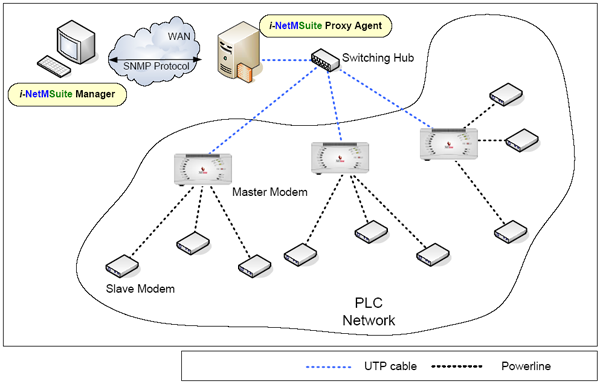

Team Name
-
PLC-NMS Team
Team Memeber
Project
Topic: Agent design and implementation for PLC devices
- 전력선통신
- AC 전원선을 통신선으로 사용하여 송수신을 하는 방식
- Home Automation, 원격 검침 등에 주로 사용되었음
- 최근 통신 기술의 발달로 인해 고속 전력선 통신 시스템이 본격 등장
- Goal
- 전력선 통신용 장비들의 MIB 정의 및 구현
- 전력선 통신용 장비를 위한 SNMP Agent의 설계 및 구현
- 전력선 통신망을 위한 Emulator의 설계 및 구현
- 전력선 통신용 장비를 위한 SNMP Manager의 설계 및 구현
(Web-based Manager)
- PLC Network Overview and System Perspective

- Resources
- Proposal (pdf)
- Requirements Analysis (pdf,
ppt)
- High-Level Design (pdf,
ppt)
- Detail Design (pdf,
ppt)
- Implementation/Testing
- Integration/Testing
- Documentation
(pdf)
- Final Presentation & demo (ppt)
Useful Links
Last modified:
COPYRIGHT (c) SINCE 2006 PLC NMS Team. All Rights
Reserved. [ 2006 Spring NMS Term Project ]
|